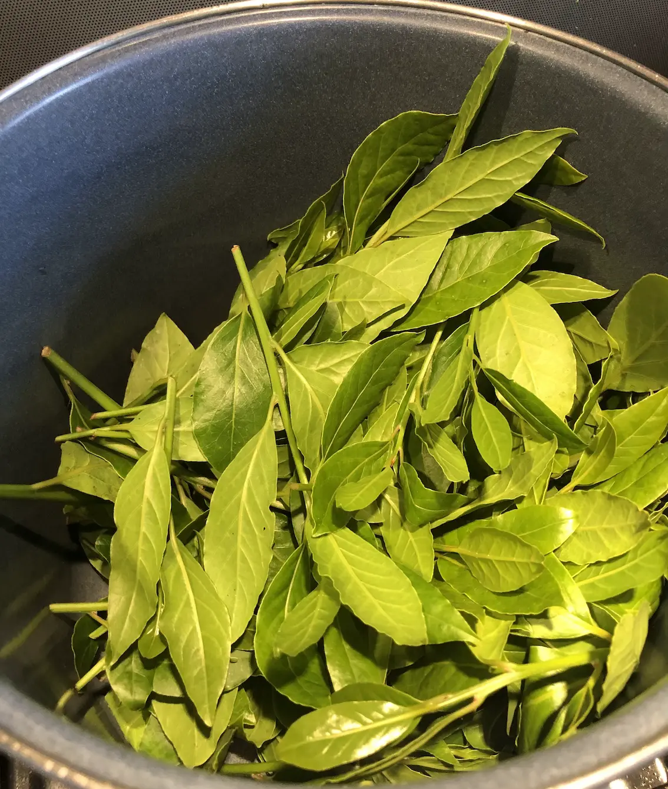
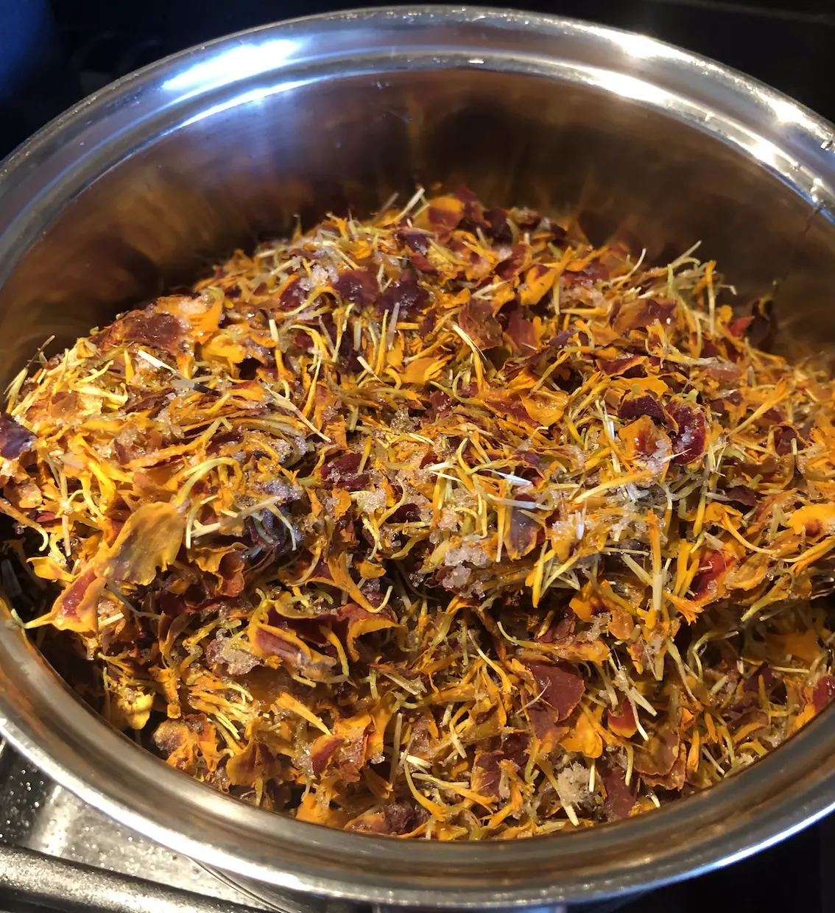
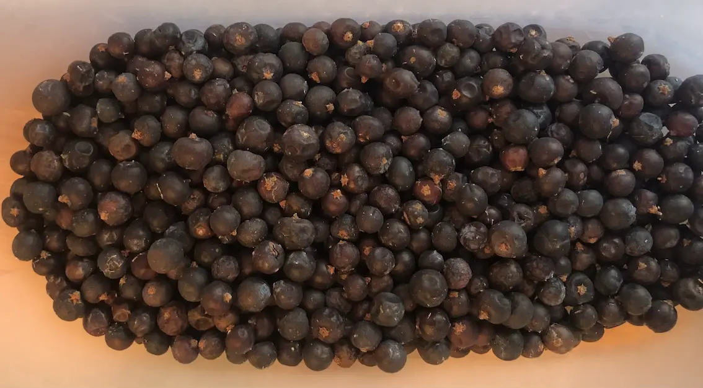
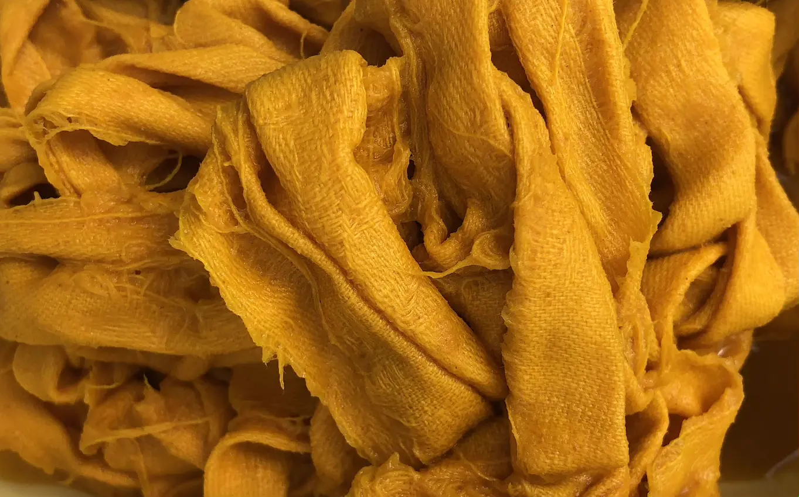
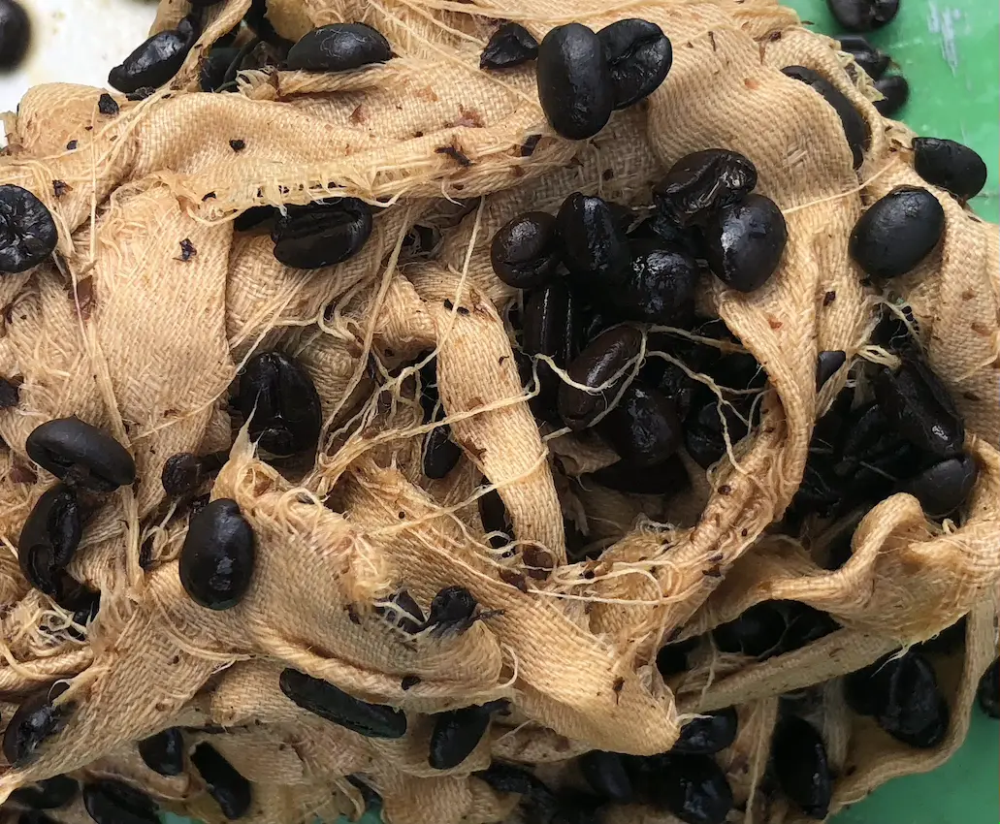
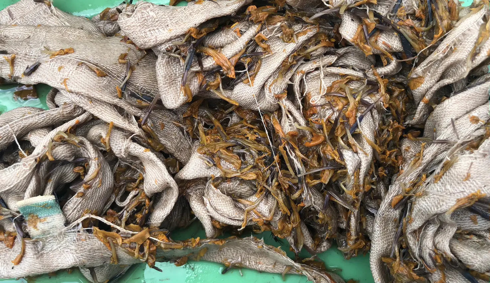
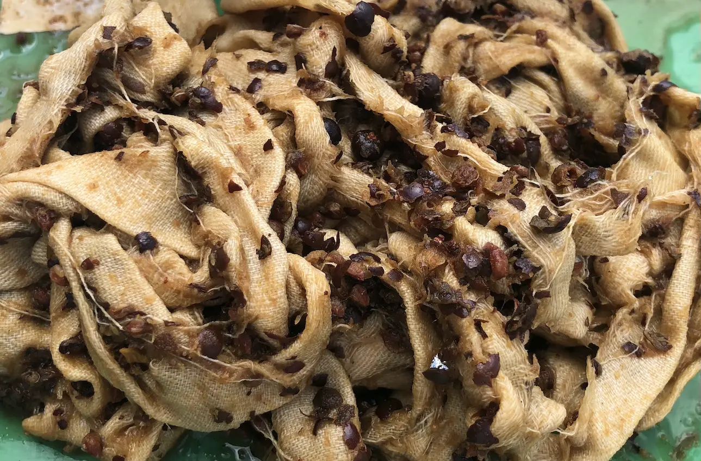
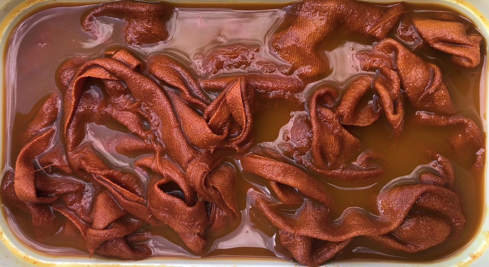
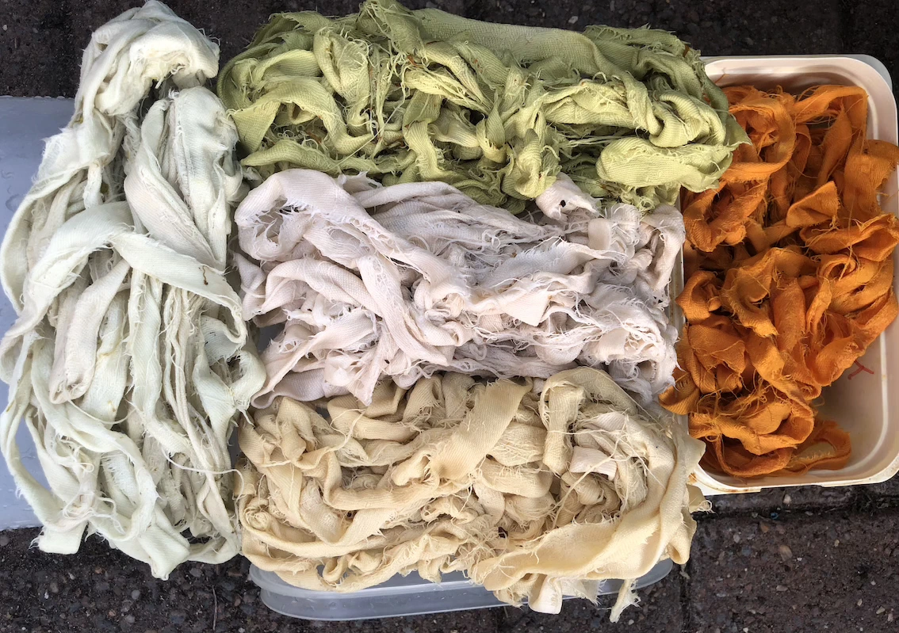

I'd Dye For You
There are scores of websites that suggest you can obtain marvellous hues from a variety of plants and other natural substances. Oh to have access to them!
I'd seen the use of onion skins demonstrated by Lancashire Wildlife Trust, but wanted to try something different. And I wanted to use substances I already had available to me. Some of these were in the garden, like bay leaves and marigold flowers.
 Others were unused and unwanted but still in the larder. Juniper berries had been acquired for wine making endeavours.
Then there were the coffee beans that were acquired during the pandemic when it seemed impossible to buy our regular brands...and are not too palatable.
Or it was something I was willing to use because I was confident I'd get a good result. Turmeric. It stains things you don't want when you spill a curry so surely it'd do the trick when used as a dye.
Into the dyeing vat they went. Or rather into a large pan with boiling water. They were gently simmered until the water turned a fetching colour.
I then added strips of cloth and kept the pan on the heat for a while. The longer the better I thought!
In the hope that I'd get deeper colours, I left the cloth in the dye while it cooled.
The colours weren't always what I'd expected. Yes, turmeric gave me yellow and coffee a pale brown.
 
But I hadn't expected more brown tones from the marigold flowers and juniper. I'd hoped for orange or pink.
 
I rinsed the dyed fabric with the lye I'd made previously. Well, I'd made it so I was going to use it. Plus the dye ingredients had left a lot of debris that needed to be removed somehow!
It was fascinating to see the colour change of the turmeric dyed cloth when dipped in the lye, but I think I preferred the original!
So by the end of my experiment I had a few piles of coloured cloth. Just enough to add a bit of interest to the laundry bag I was planning to make from old table cloths.
